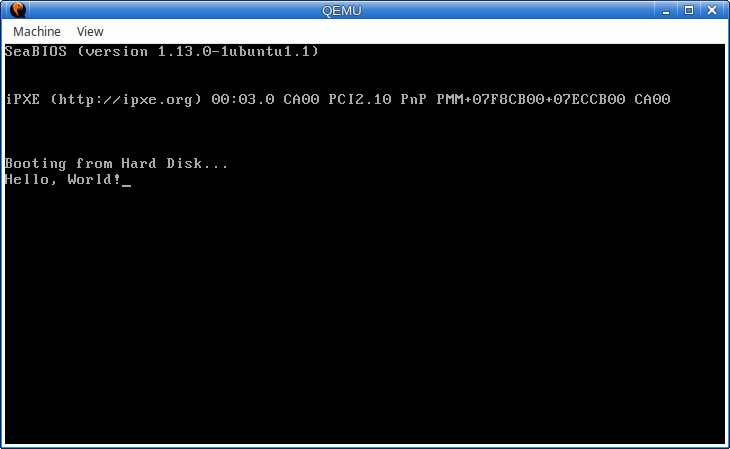

Handmade OS in 30 days
Preface
Welcome abroad, young OS developer! You have stepped out into an endless ocean of the one of the most interesting hobbies there are. Trust me, this book barely scratches the surface of what's possible, but it gives enough for you to build something you can show off to your friends and if you want, learn more about OS development, giving you not only the opportunity to build an OS, but the opportunity to build you the OS you want.
Each chapter is named according to what you're about to do in the chapter, but besides the instruction, each chapter contains the detailed explanation of what we're doing and why we're doing. If you're blindly copying the code, don't expect it to work! Read the book carefully, make sure you understand everything.
Table of contents
- Day 00 / Hello, world!
- Day 01 / Reading the disk
- Day 02 / Starting C programming
- Day 03 / GDT/IDT setup
- Day 04 / Interrupt handling
Hello, world!
Today is the first (actually zeroth) day of our OS development. Today there will be a lot of theory, but at the end you will build something that is actually tangible. The plan is to build the most primitive OS that simply displays "Hello world" to the screen and does nothing else.
To actually build and run our OS we would need a few programs. The following chapter lists all the requirements and the installation instructions.
1. Setting up the stage
The OS will be developed using two programming languages - C and Assembly. The reason for such choice is partly my personal preference and partly the necessary choice.
In principle you can make your OS in any systems-level programming language you want, be it C, C++, Rust or Go. But when you do so, some parts of the programming language can't be utilized, since they require an OS in order to be function. For example the printf function, a C function that prints character strings to a screen can not be used. Since we're writing the OS even if we called printf we'd just crash, or won't be able to compile our code properly.
Once you disable such functionality, you can use whatever programming language you want. The reason C is a good programming language here is because it doesn't have that many features that depend on existing OS functionality. Basically I chose C because that's easier for the explanation.
The assembly is our second language, but only because it is necessary to write some parts of the OS in it. When you develop an OS sometimes you need to play around with specific registers in the processor or have a more fine-grained control over what code gets generated. Since C is not made for OS development, it naturally won't have those things. With assembly you can do pretty much anything, which is why we need it. We could even write the whole OS in assembly, but its incredibly tiring, so I'd rather pass. Besides who would read a book like that, haha.
For the C compiler in this book we will use the GCC compiler. If you're using Windows I recommend downloading TDM-GCC. It's a fairly minimal binary distribution of GCC compiler which won't require you to install as much as 4gb.
Note that you won't be able to use Visual Studio's C compiler. Or rather you can, but that will require you to search internet on how to disable certain compiler features that we can't use, because the compiler options for these two compilers are different.
Download TDM-GCC into whatever directory you want. You will need to remember that directory for later.
For the assembler we will use NASM. This is one of the assemblers which also comes as a fairly minimal distribution. Download and install it into whatever directory you want. You will need to remember the name of the directory for later.
After we have compiled our OS we will need to somehow run it. When you turn on your computer the OS is loaded from the disk. So we will need to create a disk image with the OS on it and then write that image onto the disk (About why its not as simple as copying the OS file onto the disk we'll talk later). The program called Win32DiskImager can write image files onto thumb drives, so you can download it as well.
When developing our OS you are likely to recompile it lots of times, and going through the cycle of writing an OS to thumb drive and restarting the PC might not be the best use of time. To make the process simpler we will use an emulator. There are two good emulators I know, one of them is bochs and another is QEMU. We will use QEMU, because it's easier to set up. You can download QEMU from the official website. Again you'll need to remember the directory where its installed.
The last but not the least, it's optional to have some hex editor installed. This is a program that lets you view the bytes of the files directly. This is very useful in many situations when you develop an OS. I suggest downloading and using HxD.
When developing the OS we will use one program more often than any other -- that's the command line. It should be installed on Windows by default. In case you're not familiar with it, the following is a small tutorial on cmd. First, to start the command line you press win+r and in the appeared window you type cmd and hit enter.
The part after > is the place where you enter commands to command your OS to perform certain operations. Try typing dir and hitting enter, like this:
> dirIn this book whenever there is a direction to type a command into the command line, I will start the line with >. This is representing the command line prompt, so you don't type this symbol.
The dir is a command that prints the contents of the current directory. Currently your current directory is C:\Windows\System32\. You can see it before the >. You can change the current directory to something else by typing cd <path>. Let's, for example change our current directory to C:\.
> cd C:\Now we'll create the directory where we will be developing our OS. You can chose whatever path you want. For this example I chose C:\os, for a lack of imagination.
> mkdir osThe mkdir <path> creates a directory on a given directory. Now switch your current directory to the newly created directory. This directory is where I will assume your current directory to be every time we use the command line. If you close the command line and come back the next day, just remember to switch your current directory to the path where your OS is located.
Now what we want to do is to be able to use nasm and all the other programs that we just downloaded. We can do this by typing the full path to exe, like this:
> path/to/nasm.exeBut that's lengthy. What I want to do now is to add the path/to/nasm to the PATH environment variable. If we do that, then we can just type nasm.exe and Windows will automatically know that we refer to the path/to/nasm.exe.
Here's how to do it. Hit win+r, this time type sysdm.cpl and hit enter. In the appeared window switch to "Advanced" tab, and press the "Environment Variables..." button. In the "System variables" you need to select "Path" and then press the "Edit..." button.
If you're using Windows 8 and above you simply need to add the paths to qemu-system-i386.exe, nasm.exe and gcc.exe (remember the installation directories). If you're using Windows 7, you need to paste these paths and make sure they are separated with ;. Save the changes, and close the Environment variable editor.
To check that everything has been done correctly close and re-open the command line. Then type
> nasm -vThis command should print nasm version and return to the prompt. If you see something along the lines of "nasm is not a command or a file", then you did something wrong.
This concludes our tool setup. Now we'll learn more about how exactly we would need to make our OS.
2. How OS boots
When you turn on the PC, the OS loader is loaded from the disk into the memory and then executed. Then the OS loader is supposed to load the rest of the OS. The program called BIOS is responsible for loading the OS loader from the disk.
You may be familiar with BIOS if you ever entered the BIOS settings menu. The BIOS settings is not the same as BIOS itself (but rather a part of it). Please be careful to not confuse the two. The BIOS is the first program to run on your PC right after you turn on the power button.
Unlike OS, the BIOS is not stored on disk, but rather it's stored in the motherboard ROM. It comes already installed right after you buy a fresh motherboard.
After BIOS has started it performs hardware initialization. It checks all the disks in the system (thumb drives, SSD's and hard drives), and if it finds a bootable disk, it loads the OS from that disk. Note that the first found device will be booted from, which is why the order is important. If there is one OS on the thumb drive, and another on the hard drive, then the order in which BIOS checks these disks determines which OS will be loaded. That's why you can change this checking order in the BIOS settings.
Most disks are separated into 512-byte chunks called sectors. When you interact with the disk you can not load less than a sector, and you can not write than a sector. So the sector is the minimum adressable unit of any disk.
The first sector of every disk is reserved and contains the OS boot code. If the two last bytes of this sector are 55 aa (hex), then the disk is considered bootable by BIOS and the rest of the boot code is ran. That's why the first sector is also called the boot sector.
The boot sector looks roughly like this:
| Offset (hex) | Size | Description |
|---|---|---|
000 | 510 | The loader code |
1fe | 2 | The 55 aa boot signature |
We have only 510 bytes for the code! But don't worry, it's not as much as to cause us to suffer deficiency, if we write trivial loader. If anything, it's more than enough for our purposes.
There's one more sweet thing about BIOS. BIOS also provides its own functions that help loader boot the rest of the OS. There are BIOS functions that print characters to the screen, the functions that load sectors from disks and other functions related to primitive hardware control.
Now we will write our first boot sector and try figuring out how to actually run it.
3. Making a bootable image
Now I want to create an image of the bootable disk with some code. The meaning of the code will be explained later, right now let's focus on how to actually get the bootable image.
The bootable image is the byte-by-byte representation of the data on the disk. Since disks are only addressed by sectors, the size of that file would be a multiple of 512 bytes. If this data is then written ("burned") to the disk, the disk will have these exact bytes.
Note that we can actually use images that are much less than the size of the disk. In this case the part that the disk image didn't overwrite will remain untouched. So for now we will use this and use 512-bytes long image that contains only the boot sector.
First, we'll need to have a 512-bytes long binary file that contains the boot sector. For this open HxD, and type the following bytes:
b800 008e d8be 1d7c b40e bb07 008a 0483
c601 3c00 7404 cd10 ebf3 f4eb fd48 656c
6c6f 2c20 576f 726c 6421 0000 0000 0000
0000 0000 0000 0000 0000 0000 0000 0000
0000 0000 0000 0000 0000 0000 0000 0000
0000 0000 0000 0000 0000 0000 0000 0000
0000 0000 0000 0000 0000 0000 0000 0000
0000 0000 0000 0000 0000 0000 0000 0000
0000 0000 0000 0000 0000 0000 0000 0000
0000 0000 0000 0000 0000 0000 0000 0000
0000 0000 0000 0000 0000 0000 0000 0000
0000 0000 0000 0000 0000 0000 0000 0000
0000 0000 0000 0000 0000 0000 0000 0000
0000 0000 0000 0000 0000 0000 0000 0000
0000 0000 0000 0000 0000 0000 0000 0000
0000 0000 0000 0000 0000 0000 0000 0000
0000 0000 0000 0000 0000 0000 0000 0000
0000 0000 0000 0000 0000 0000 0000 0000
0000 0000 0000 0000 0000 0000 0000 0000
0000 0000 0000 0000 0000 0000 0000 0000
0000 0000 0000 0000 0000 0000 0000 0000
0000 0000 0000 0000 0000 0000 0000 0000
0000 0000 0000 0000 0000 0000 0000 0000
0000 0000 0000 0000 0000 0000 0000 0000
0000 0000 0000 0000 0000 0000 0000 0000
0000 0000 0000 0000 0000 0000 0000 0000
0000 0000 0000 0000 0000 0000 0000 0000
0000 0000 0000 0000 0000 0000 0000 0000
0000 0000 0000 0000 0000 0000 0000 0000
0000 0000 0000 0000 0000 0000 0000 0000
0000 0000 0000 0000 0000 0000 0000 0000
0000 0000 0000 0000 0000 0000 0000 55aaThere are lots of zeroes, so you can try using the copy and paste feature of the HxD to finish the job more quickly. After you're done save the file in your OS directory and name it boot.bin (a rose by any other name would smell as sweet).
boot.bin is our disk image. Now we need to run our OS, (if I dare calling the loader an OS). First, let's try running it in an emulator to make sure everything is correct. For this use the command qemu-system-i386 <disk image> into the command line:
> qemu-system-i386 boot.binNote that when you do that QEMU prints a warning:
WARNING: Image format was not specified for 'boot.bin' and probing guessed raw.
Automatically detecting the format is dangerous for raw images, write operations on block 0 will be restricted.
Specify the 'raw' format explicitly to remove the restrictions.You can ignore this warning for now, I will show you how to specify the format of the disk image explicitly later. If you copied the bytes of the boot sector correctly, you should see the following result:

The particular content of the screen may differ depending on the QEMU version, but if you don't see the "Hello, World!" string, something is wrong. Check that you typed the boot sector correctly and that it's size is exactly 512 bytes.
If your image file is correct, we can move on to trying to run it on a real hardware. Make sure you got a thumb drive (or another storage medium) that has no important data. Because any data that's stored will become unavailable. Open Win32DiskImager, the program that writes disk images to disks.
In the "Image File" field, chose the file boot.bin. If you can't find it, make sure to disable the .iso filter in Win32DiskImager. Then in the "Device" dropdown chose your thumb drive. Make sure you picked the correct device. Then hit the "write" button. After the process finished you got a bootable USB!
Now you need to know how to enter your BIOS settings. Turn off your PC and set the USB as the first boot option, and the hard drive as the second option (you have to do it only once, just don't forget to eject the USB before rebooting back into Windows). I can't give you more detailed instructions, because the specifics depend from one PC to another.
Plug in your USB and restart your computer. Since USB is the first device, it checks it's boot signature (55 aa). If there is a boot signature, BIOS will run our boot code. If the boot signature is not there, it would boot back into the Windows.
If after that you boot back into Windows (assuming that you were in the emulator), the most likely problem is that your USB is not the first boot option. The other causes may be that your motherboard doesn't start-up in the BIOS mode. This also can be changed in BIOS settings.
If you see the "Hello, World!" message, I congradulate you! You can show this off to your friends and say how cool you are. Except there is only one problem -- we still have no idea what are these bytes, and how they correspond to the "Hello, World!" message. We'll start by re-writing our image in the Assembly language.
4. Intro to the NASM assembler
The CPU reads the code as bytes, instruction by instruction. The assembly language is relatively straightforward -- you write one instruction per line, and the assembler converts this into the corresponding machine code.
One of the first instructions that we'll learn is db (data byte). It is not a real instruction, in the sense that it's not being processed by the CPU, but rather its a pseudo-instruction, it instructs NASM to do something special. The db instruction tells NASM to put the given byte value into the file.
Try this: create a file, which we will use later, call it boot.asm. Then write the following contents into the file:
db 0xb8And save it. Then in the command line run
nasm boot.asm -o boot.binThis command tells NASM to compile boot.asm and put the compiled file into boot.bin. This will overwrite the contents of boot.bin, so be careful. -o stands for "output". The dash there signifies that it is a command-line option.
After you have compiled the file, open boot.bin in the hex editor. You should see 0xb8 as the only byte of it. So as you can see, NASM simply put the given value 0xb8 value into the file. We can write multiple bytes like this:
db 0xb8
db 0x00Or, for shortness we can just list the bytes after a comma:
db 0xb8, 0x00By continuing copy-pasting the bytes from our initial boot.bin we can achieve the following assembly:
db 0xb8, 0x00, 0x00, 0x8e, 0xd8, 0xbe, 0x1d, 0x7c
db 0xb4, 0x0e, 0xbb, 0x07, 0x00, 0x8a, 0x04, 0x83
db 0xc6, 0x01, 0x3c, 0x00, 0x74, 0x04, 0xcd, 0x10
db 0xeb, 0xf3, 0xf4, 0xeb, 0xfd, 0x48, 0x65, 0x6c
db 0x6c, 0x6f, 0x2c, 0x20, 0x57, 0x6f, 0x72, 0x6c
db 0x64, 0x21, 0x00, 0x00, 0x00, 0x00, 0x00, 0x00
db 0x00, 0x00, 0x00, 0x00, 0x00, 0x00, 0x00, 0x00
db 0x00, 0x00, 0x00, 0x00, 0x00, 0x00, 0x00, 0x00
db 0x00, 0x00, 0x00, 0x00, 0x00, 0x00, 0x00, 0x00
db 0x00, 0x00, 0x00, 0x00, 0x00, 0x00, 0x00, 0x00
db 0x00, 0x00, 0x00, 0x00, 0x00, 0x00, 0x00, 0x00
db 0x00, 0x00, 0x00, 0x00, 0x00, 0x00, 0x00, 0x00
db 0x00, 0x00, 0x00, 0x00, 0x00, 0x00, 0x00, 0x00
db 0x00, 0x00, 0x00, 0x00, 0x00, 0x00, 0x00, 0x00
db 0x00, 0x00, 0x00, 0x00, 0x00, 0x00, 0x00, 0x00
db 0x00, 0x00, 0x00, 0x00, 0x00, 0x00, 0x00, 0x00
db 0x00, 0x00, 0x00, 0x00, 0x00, 0x00, 0x00, 0x00
db 0x00, 0x00, 0x00, 0x00, 0x00, 0x00, 0x00, 0x00
db 0x00, 0x00, 0x00, 0x00, 0x00, 0x00, 0x00, 0x00
db 0x00, 0x00, 0x00, 0x00, 0x00, 0x00, 0x00, 0x00
db 0x00, 0x00, 0x00, 0x00, 0x00, 0x00, 0x00, 0x00
db 0x00, 0x00, 0x00, 0x00, 0x00, 0x00, 0x00, 0x00
db 0x00, 0x00, 0x00, 0x00, 0x00, 0x00, 0x00, 0x00
db 0x00, 0x00, 0x00, 0x00, 0x00, 0x00, 0x00, 0x00
db 0x00, 0x00, 0x00, 0x00, 0x00, 0x00, 0x00, 0x00
db 0x00, 0x00, 0x00, 0x00, 0x00, 0x00, 0x00, 0x00
db 0x00, 0x00, 0x00, 0x00, 0x00, 0x00, 0x00, 0x00
db 0x00, 0x00, 0x00, 0x00, 0x00, 0x00, 0x00, 0x00
db 0x00, 0x00, 0x00, 0x00, 0x00, 0x00, 0x00, 0x00
db 0x00, 0x00, 0x00, 0x00, 0x00, 0x00, 0x00, 0x00
db 0x00, 0x00, 0x00, 0x00, 0x00, 0x00, 0x00, 0x00
db 0x00, 0x00, 0x00, 0x00, 0x00, 0x00, 0x00, 0x00
db 0x00, 0x00, 0x00, 0x00, 0x00, 0x00, 0x00, 0x00
db 0x00, 0x00, 0x00, 0x00, 0x00, 0x00, 0x00, 0x00
db 0x00, 0x00, 0x00, 0x00, 0x00, 0x00, 0x00, 0x00
db 0x00, 0x00, 0x00, 0x00, 0x00, 0x00, 0x00, 0x00
db 0x00, 0x00, 0x00, 0x00, 0x00, 0x00, 0x00, 0x00
db 0x00, 0x00, 0x00, 0x00, 0x00, 0x00, 0x00, 0x00
db 0x00, 0x00, 0x00, 0x00, 0x00, 0x00, 0x00, 0x00
db 0x00, 0x00, 0x00, 0x00, 0x00, 0x00, 0x00, 0x00
db 0x00, 0x00, 0x00, 0x00, 0x00, 0x00, 0x00, 0x00
db 0x00, 0x00, 0x00, 0x00, 0x00, 0x00, 0x00, 0x00
db 0x00, 0x00, 0x00, 0x00, 0x00, 0x00, 0x00, 0x00
db 0x00, 0x00, 0x00, 0x00, 0x00, 0x00, 0x00, 0x00
db 0x00, 0x00, 0x00, 0x00, 0x00, 0x00, 0x00, 0x00
db 0x00, 0x00, 0x00, 0x00, 0x00, 0x00, 0x00, 0x00
db 0x00, 0x00, 0x00, 0x00, 0x00, 0x00, 0x00, 0x00
db 0x00, 0x00, 0x00, 0x00, 0x00, 0x00, 0x00, 0x00
db 0x00, 0x00, 0x00, 0x00, 0x00, 0x00, 0x00, 0x00
db 0x00, 0x00, 0x00, 0x00, 0x00, 0x00, 0x00, 0x00
db 0x00, 0x00, 0x00, 0x00, 0x00, 0x00, 0x00, 0x00
db 0x00, 0x00, 0x00, 0x00, 0x00, 0x00, 0x00, 0x00
db 0x00, 0x00, 0x00, 0x00, 0x00, 0x00, 0x00, 0x00
db 0x00, 0x00, 0x00, 0x00, 0x00, 0x00, 0x00, 0x00
db 0x00, 0x00, 0x00, 0x00, 0x00, 0x00, 0x00, 0x00
db 0x00, 0x00, 0x00, 0x00, 0x00, 0x00, 0x00, 0x00
db 0x00, 0x00, 0x00, 0x00, 0x00, 0x00, 0x00, 0x00
db 0x00, 0x00, 0x00, 0x00, 0x00, 0x00, 0x00, 0x00
db 0x00, 0x00, 0x00, 0x00, 0x00, 0x00, 0x00, 0x00
db 0x00, 0x00, 0x00, 0x00, 0x00, 0x00, 0x00, 0x00
db 0x00, 0x00, 0x00, 0x00, 0x00, 0x00, 0x00, 0x00
db 0x00, 0x00, 0x00, 0x00, 0x00, 0x00, 0x00, 0x00
db 0x00, 0x00, 0x00, 0x00, 0x00, 0x00, 0x00, 0x00
db 0x00, 0x00, 0x00, 0x00, 0x00, 0x00, 0x55, 0xaaThis is way more typing! But you don't have to do it all manually, I simply left it here for demonstration purposes. If you copy-paste this into boot.asm and assemble it, you should get exactly the same boot.bin as before, except now it is written in assembly and then assembled, instead of being written directly as bytes.
So this is why NASM is also the all-powerful tool which you can use to type whatever program you want and whatever file you want! Of course, it is just a joke, kind of like saying that you can write any great book with just a pencil and paper. But it just shows the versatility of the language.
Now I will introduct another useful instruction. It is also a pseudo-instruction, this time I'd even say a "meta-instruction". This instruction is times. By doing times N <instruction> you can achieve the same result as if the instruction was actually typed out N times. We can use this to remove all the zeroes in boot.asm above.
db 0xb8, 0x00, 0x00, 0x8e, 0xd8, 0xbe, 0x1d, 0x7c
db 0xb4, 0x0e, 0xbb, 0x07, 0x00, 0x8a, 0x04, 0x83
db 0xc6, 0x01, 0x3c, 0x00, 0x74, 0x04, 0xcd, 0x10
db 0xeb, 0xf3, 0xf4, 0xeb, 0xfd, 0x48, 0x65, 0x6c
db 0x6c, 0x6f, 0x2c, 0x20, 0x57, 0x6f, 0x72, 0x6c
db 0x64, 0x21, 0x00
times 467 db 0x00
db 0x55
db 0xaaThere were 467 zeroes so I removed them and replaced with times 467 db 0x00.
By the way, it's a fun observation on my side, but for some reason you can't use times as the argument to times. Somehow NASM breaks, what a pity. In any case you can use arithmetics as N, so you shoulf be able to do stuff like times 400+67 db 0x00.
Now prepare for the great reveal. I will uncover the rest of the assembly code and we will look at each of the parts in a greater detail, as well as learn a few more facts about x86, BIOS and the assembly language.
org 0x7c00
start:
mov ax, 0
mov ds, ax
print:
mov si, string
mov ah, 0x0e
mov bx, 0x0007
putchar:
mov al, [si]
add si, 1
cmp al, 0
je end
int 0x10
jmp putchar
end:
hlt
jmp end
string:
db 'Hello, World!', 0
times 510 - ($-$$) db 0
db 0x55
db 0xaaFinally some letters! Let's start digging the instructions. I will skip the first line until later. Then we see the following part:
start:
mov ax, 0
mov ds, axThe start: is a label. When you put a label before an instruction, in this case before mov ax, 0, that label points to that instruction. We can later use that label to refer to that instruction, for example figure out it's memory address.
The mov instruction moves the value of the second operand into the first operand. Actually, mov is a kind of misnomer. When you move a thing, it is understood that the thing is not on its old place anymore. With mov, rather than moving it's more like copying. So the guys at Intel should have thought better and named this instruction "copy" or "set". In any case mov ax, 0 means "ax = 0". It sets the register ax to zero. Likewise, mov ds, ax sets the register ds to the value of ax.
For now think of registers as kinds of variables, and when you program assembly there is only a limited amount of those "variables". The registers in x86 have their own names, here I will name them all:
- ax - accumulator
- cx - counter
- dx - data
- bx - base
- si - source index
- di - destination index
- sp - stack pointer
- bp - base pointer
- cs - code segment
- ss - stack segment
- ds - (default) data segment
- es - extra data segment
The first 8 are general-purpose registers. This means they can be used interchangeably for most general-purpose instructions, such as arithmetic, comparison, jumps, memory accesses. The reason for their names is that some instructions are biased towards some registers over the other, and if you use the registers according to their name you can write relatively fast and short code. E.g. if you use accumulator register as the cumulative value during the computation a complex expression, you can avoid extra mov instruction.
The last four registers are segment registers. They are used for memory addressing. You can note that above we were setting the data segment to zero. I won't explain why this is important for now, just know that doing so will help avoid problems with addressing for now.
With this we have figured out that the first 3 lines of code do roughly what I can describe as "register initialization". The next block is the following:
print:
mov si, string
mov ah, 0x0e
mov bx, 0x0007
; ... Some code ...
string:
db 'Hello, World!', 0And a quick remark, lines starting with ; mark comments. The comment spans until the end of line and is ignored by the assembler.
After the print: label, the first thing we're doing is we're setting si to be string. But if si is a 16-bit register, what does it exacrly mean to set it to string? Well, it is finally the time to tell you about the labels in NASM.
The labels in NASM are memory addresses of the instruction that comes next. The string "Hello, World!" is located at the offset 0x1d from the start of the file. And since the boot sector is loaded starting at the address 0x7c00, the address of the string in memory would be 0x7c00+0x1d = 0x7c1d. This will be the address of the label string.
So in this case, mov si, string means the same thing as mov si, 0x7c1d. The reason we're using labels is because as soon as we remove or add new instructions, we would have to recalculate the new address of the string within the file. This is dirty work that we don't want and don't have to do. What a convenient world!
Also note how the load address of the program is participates in this calculation. This is exactly why we needed that org instruction at the beginning. If we for some reason forgot it or specified a wrong address, the address calculation would have yielded a wrong value (0x1b would be added to a wrong offset) pointing to some random location in memory and we wouldn't have printed anything coherent.
Next, here is a seemingly new register, ah. In fact, the first four general-purpose registers (ax, cx, dx, bx) can be split up into the low 8 bits and the high 8 bits. So the low 8 bits of ax are called al, and the high 8 bits of ax are called ah. Similarly cl, dl, bl are the low 8-bits of cx, dx, bx and ch, dh, bh are their high 8 bits.
When you mov to the high 8 bits of some these registers, the low 8 bits remain untouched. The other general purpose registers and segment regsiters can't be split like that. Don't ask why, I didn't design x86, haha.
Then we set the bx register to be 0x0007. This is self-explanatory.
And lastly, there is a new way of using the db command. Rather than specifying numbers you can specify character strings. For that you can surround the string with singular quotes (') or double quotes ("). When you do that NASM stores that entire string, character by character into the output file.
Moving to the next part:
putchar:
mov al, [si]
add si, 1
cmp al, 0
je end
int 0x10
jmp putcharFollowing the label we see another mov instruction. But this time it's something new. Time to talk about memory.
The memory can be imagined as a flat array of bytes. The indices to that array are what's called the "address in memory". Whenever you load something from memory or put something into the memory, you always say something like "Hey can you put the value XX into the box number YYYY" to the CPU.
The square brackets around an operand turn the simple assignment into memory load. So rather than setting the value of al to the value of si, we're setting the value of al to the value of memory cell at address si.
In this case only a single byte is read from the memory, because the size of destination (al) is 8. If we wrote instead mov ax, [si] that would have loaded 2 bytes from the memory into ax. So the number of bytes loaded depends on the operands. But sometimes it's not possible to infer the size of the load just from the operands. Consider mov [si], 2. If you wrote that, NASM would kindly say the following:
error: operation size not specifiedThe way you can specify the operand size is by prepending [] with either byte, word or dword. In the case above that would be mov byte[si], 2 or mov word[si], 2. It's also true that mov al, [si] is the same thing as mov al, byte[si].
Also an important note. When you load multibyte value from the memory, for example mov ax, word[si], the low 8 bits of ax will be loaded from the address si, and the high 8 bits will be loaded from the address si+1.
Returning to the next instruction on the line, we see add si, 1. This is self-explanatory, we increment si by 1, so the next time it will point to the next character in the string.
cmp al, 0 will compare al with 0. It won't do anything besides set the FLAGS register, one of the registers we haven't talked about yet. The FLAGS register contains the status of the previous instruction, like whether the previous instruction overflown, as well as the results of comparison, like whether the result of comparison was "greater", "less" or "equal". It only sets the flags, doesn't do much more. This is important for the next instruction.
Which is je end. je stands for "Jump if Equal". Here end is a label, meaning it will have the value of the memory address of the instruction to which we're going to jump. And the "if equal" part is taken from the results of the previous comparison. Reading the pair of instructions, the meaning is "we're going to jump to end if al is 0".
Next is int 0x10. INT stands for interrupt. Explaining interrupts here fully would suck out all the energy from you so I will just ask you to think about interrupt here as "function call". In particular this is BIOS call that prints the character. You can find many different interrupt tables online, including on Wikipedia.
The number after int specifies a general kind of function you're calling. The number 0x10 (16) means you're calling a display function, if it was 0x13, you'd be calling disk services. There are also numbers for keyboard, mouse, timers.
The function is defined not only by the interrupt number, but also by the value of ah at the time we're calling the interrupt. If you remember, we set ah to be 0x0e. If you look the wikipedia article for int 0x10 with ah=0x0e, you can find a function like this:
INT 0x10 / AH = 0x0e
Print character function
Parameters:
al = character
bh = page number
bl = color
Returns:
noneSo the parameters are stored in the registers. If you remember, al is the register containing the characters of the strings that we load from si, and bx is always 0x0007. This means that bh is 0, and bl is always 0x07. I won't bother you with the meaning of these two parameters, but just note that the color 0x07 is light grey, and it's fine to just leave the page number at 0.
So this int instruction prints the character at al to the screen.
Finally, the last instruction of this block is jmp. JMP stands for jump. jmp doesn't check any flags in the FLAGS register, in this case it just jumps back to the point when we read the next character from the string.
So overall this block of code reads the characters from the string, one by one, until it encounters 0x00, and print them to the screen.
And the final block of code is this:
end:
hlt
jmp endYou can see that this is an infinite loop that runs a single instruction - hlt. HLT stands for Halt, it's used to put the processor to sleep until the next interrupt, which is used to consume the power. I like thinking that I'm saving the planet from the apocalypse by inserting a HLT instruction into infinite loops, so this is why I didn't just wrote
end:
jmp endThe last part is more-less familiar to us, just written differently.
times 510 - ($-$$) db 0
db 0x55
db 0xaaHere, if you read $-$$ as "the number of bytes in the file up until this point", you can clearly see how 510-($-$$) is simply the number of bytes that is needed until you reach 510. In our case the number of bytes before that huge block of zeroes is 43, so 510-43 is 467. We will insert zero 467 times. And the 43 code bytes + 467 zeroes should leave us at offset 510.
Then we simply insert the remaining bytes, 55 and aa, our boot signature. This concludes the explanation of the assembly. I encourage you to read through the full code again, making sure you understand it and what it does.